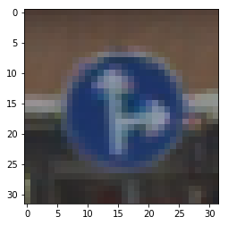
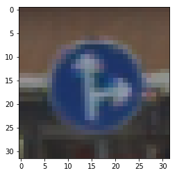

--
利用深度神经网络来识别交通标志
这是 Udacity 无人驾驶工程师课程第一学期的第 2 个项目。
我们利用基于 LeNet 的神经网络来识别交通标志。
LeNet 的基本使用见于上一篇博客。
LeNet
而我的这个项目的实现代码在: github
1. 数据集
你可以用：
German Traffic Sign Dataset
也可以用：
32*32 dataset
前者是一个完整的数据集，后者已经裁剪号称为了 32*32， 而且是 pickle 文件格式，不需要额外的读取。
我们可以这样读取数据集：
import pickle
training_file = './train.p'
validation_file= './valid.p'
testing_file = './test.p'
with open(training_file, mode='rb') as f:
train = pickle.load(f)
with open(validation_file, mode='rb') as f:
valid = pickle.load(f)
with open(testing_file, mode='rb') as f:
test = pickle.load(f)
X_train, y_train = train['features'], train['labels']
X_valid, y_valid = valid['features'], valid['labels']
X_test, y_test = test['features'], test['labels']
print('X_train shape = ', X_train.shape)
print('y_train shape = ', y_train.shape')
print('X_valid shape = ', X_valid.shape)
print('y_valid shape = ', y_valid.shape)
print('X_test shape = ', X_test.shape)
print('y_test shape = ', y_test.shape)
训练集是：(34799, 32, 32, 3) ，(34799,)
验证集是：(4410, 32, 32, 3)，(4410,)
测试集是：(12630, 32, 32, 3)，(12630,)
2. 数据快速浏览
import matplotlib.pyplot as plt i = 234 plt.imshow(X_train[i]) print(y_train[i]) plt.show() plt.imshow(X_train[i]) print(y_train[i]) plt.show() print(np.unique(y_train)) print(np.unique(y_valid)) print(np.unique(y_test))我们可以看到样本基本上长这个样子：
 

3. model 可以参考 Yann LeKun 的这篇文章 作为一个 baseline 的accuracy 可以达到 98.97 %。
而人眼识别的正确率在 98.81 %。
下面是一个小小的实现